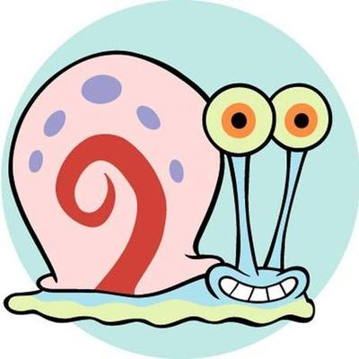
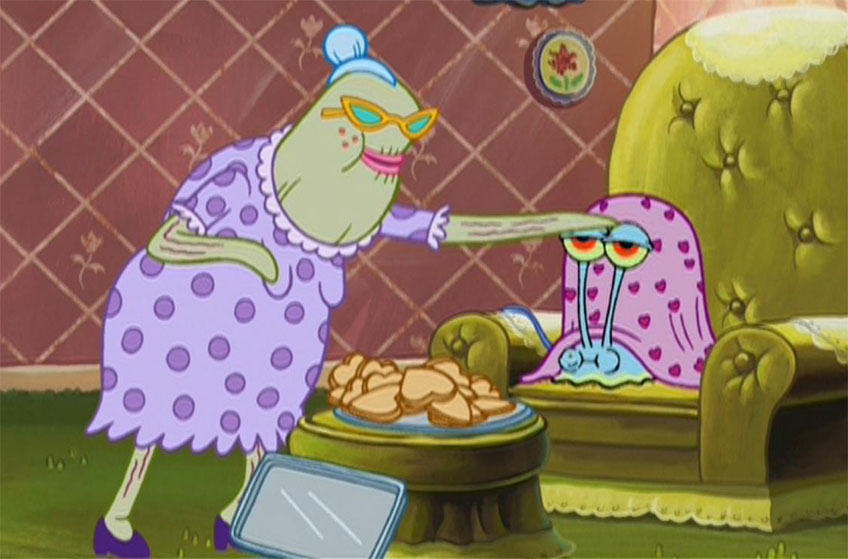

Гэри
Автор Никита Волков
Гэри Уилсон-младший - это морская улитка, которая является домашним животным Губки Боба Квадратные Штаны. Он - двоюродный брат Патрика Стара. Он живет в ананасовом доме на улице 124 Конч Стрит, Бикини Боттом, Тихий океан со своим владельцем, Губкой Бобом. Он озвучен Томом Кенни и впервые появляется в пилотном эпизоде "Требуется помощник"
Гэри был единственным ребенком Слагго Звезды и нераскрытой матерью. В какой-то момент он был принят Губкой Бобом в местном приюте для животных. В серии "Хлопья!" на фотографии изображен момент, когда Губка Боб выбрал его, показывая, что Гэри провел свое раннее детство в приюте с тремя другими улитками. Однако это противоречит в какой-то момент в серии, так как другой источник утверждает, что Губка Боб встретил Гэри в лагере Kamp Koral.

Однажды Губка Боб получил по почте ошейник-перевод болтуна для Гэри, который тот использовал как средство общения со своими сверстниками без мяуканья. В конце концов он был украден Сквидвардом, тем самым прекратив свое владение им.
В разные моменты Гэри работал в "Красти Крабе", как правило, в качестве официанта или повара в сериях "Друг для Гэри" и "Были бы у Гэри ножки".
Когда Губка Боб создал свой собственный ресторан под названием "У Губки Боба", Гэри был нанят в качестве кассира.
Он кратко играл роль диджея для акул в серии "Акулы против Спрутов"
Однажды Гэри предал Губку Боба в обмен на Патрика, хотя это было сделано только для того, чтобы получить печенье из кармана Патрика, и Гэри впоследствии вернулся к своему первоначальному владельцу.
Однако в какой-то момент Гэри переехал из Бикини Боттом в Басс-Вегас в ответ на непреднамеренную небрежность Губки Боба. После этого его взяла и приютила пожилая женщина, которая приняла его за одну из своих улиток. Как только Гэри обнаружил, что Губка Боб ищет его и выясняет мотив бабушки, он сбежал из ее дома и вернулся в Бикини Боттом, чтобы воссоединиться с Губкой Бобом.
Губку Боба отличают оптимизм, доброта, трудолюбие, надёжность и чрезмерная наивность. Его любимые занятия включают ловлю медуз (аналогично наблюдению за птицами и ловле бабочек) и надувание пузырей вместе с Патриком[2]. Он не догадывается, как раздражает Сквидварда[4]. Очень часто Губка Боб бывает слишком энергичным, даже в таких делах, о которых он ничего не знает (например, когда Сквидвард предложил ему устроить забастовку в «Красти Крабс», Спанч Боб принял предложение, не зная, что это такое). В фильме «Sponge Bob SquarePants: The Movie», а также в мультсериале (серия «Оркестр недоумков») Боб показан хорошим вокалистом и гитаристом, умеет играть на укулеле.